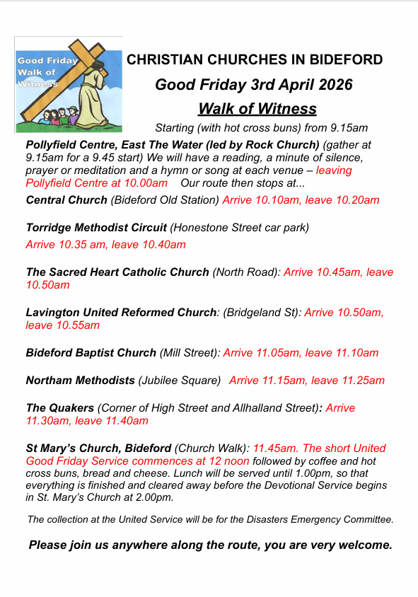

Upcoming Events for April
Bible Study - Wednesday 1st
Starts at 19:00
An informative look into the word of God.
Maundy Thursday - Thursday 2nd
All Day
Maundy Thursday Day of Prayer and Fasting with communion at 7pm.
Good Friday - Friday 3rd
All Day
Walk of Witness.

Easter Sunday - Sunday 5th
All Day
Easter morning Sunrise service on the quay, near kingsley statue at 6.30am, followed by bacon baps at church. The church service will be at 8.30am. The Torridge Baptist Easter celebration will be in Abbotsham Village Hall.
Bible Study - Monday 6th
Starts at 19:00
An informative look into the word of God.
Bible Study - Wednesday 8th
Starts at 14:00
An informative look into the word of God.
Bible Study - Monday 13th
Starts at 19:00
An informative look into the word of God.
Bible Study - Wednesday 15th
Starts at 14:00
An informative look into the word of God.
Bible Study - Monday 20th
Starts at 19:00
An informative look into the word of God.
Bible Study - Wednesday 22nd
Starts at 14:00
An informative look into the word of God.
Prayer Meeting - Thursday 23th
Starts at 07:00
Join us for our fortnightly Prayer Meeting, a peaceful time of reflection, worship, and fellowship. Together, we lift up our community, our church, and one another in heartfelt prayer. Whether you’re seeking comfort, giving thanks, or standing in faith with others, this gathering offers a warm and welcoming space for all. Come experience the power of united prayer and spiritual renewal. Everyone is welcome to join.
Bible Study - Monday 27th
Starts at 19:00
An informative look into the word of God.
Bible Study - Wednesday 29th
Starts at 14:00
An informative look into the word of God.